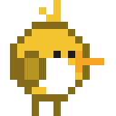
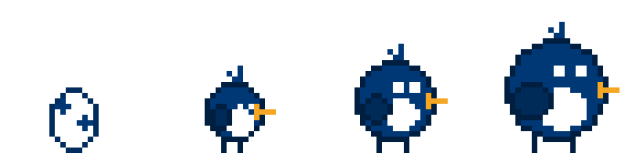

켜 두면 자라요
컴퓨터를 쓰는 동안 1분마다 경험치가 쌓입니다. 자리를 비우면 친구도 그 자리에서 잠들어요. 하루에 얻을 수 있는 경험치에는 상한이 있어서, 오래 켜 둔다고 무작정 앞서가지 않습니다.

MyUNi켜 두기만 하면 화면 아래에서 자라는 작은 친구. 학교 상징 동물과 상징색으로 태어나고, 친구들이 키운 만큼 우리 학교 순위가 올라갑니다.
컴퓨터를 쓰는 동안 1분마다 경험치가 쌓입니다. 자리를 비우면 친구도 그 자리에서 잠들어요. 하루에 얻을 수 있는 경험치에는 상한이 있어서, 오래 켜 둔다고 무작정 앞서가지 않습니다.
친구를 오른쪽 클릭(Mac 은 Control + 클릭)하면 먹이를 주거나 같이 놀 수 있어요. 하루에 몇 번씩만 할 수 있으니 생각날 때 챙겨 주세요.
알에서 시작해 레벨이 오르면 모습이 바뀝니다.

처음 켜면 닉네임과 비밀번호로 가입하고 학교를 고릅니다. 학교 인증은 필요 없어요.
IP 주소로 막거나 기록하지 않습니다.